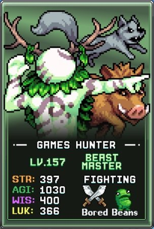
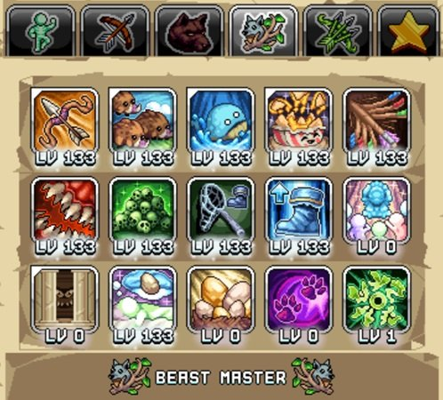
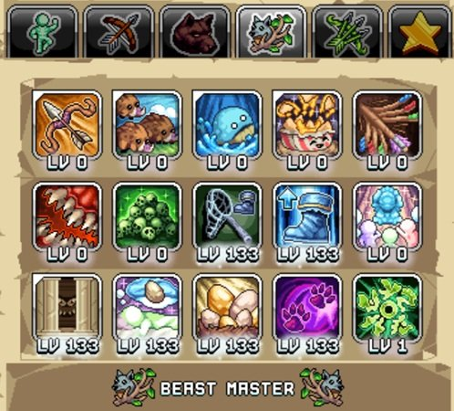

번역 안내. 클래스·스킬·탤런트 이름 등 고유명사는 인게임 검색을 위해 영어 그대로 두었고, 설명만 한글로 옮겼습니다.

데미지 빌드

Beast Master는 여러 공격 탤런트와 민첩성(AGI) 버프 및 무기 파워 향상을 통한 추가 데미지 원천을 잠금 해제합니다.
Active(직접 플레이) 및 AFK(방치) 전투 모두에서 다음 탤런트를 순서대로 우선시하세요:
| 탤런트 | 효과 | 설명 |
|---|---|---|
 Whale Wallop Whale Wallop |
근처 적에게 범위 데미지를 주는 고래 소환 | 맵의 모든 것을 공격할 수 있는 최고의 범위 공격 능력으로, Killroy 같은 Active(직접 플레이) 활동에 이상적입니다. Voidwalker로 강화하면 Breeding 시간을 진행할 수도 있습니다. Active 위주로 플레이하는 것이 목표라면 여기에 최소 1포인트 이상을 투자하세요. |
| Ballista | 화살을 발사하는 거대 발리스타 소환 | Wind Walker로 전직하기 전까지 플레이어가 직접 발동해야 하는 공격으로, Active Idleon 활동에도 이상적입니다. 탤런트 잠금 해제를 위해 1포인트면 충분하며, 추가 포인트는 타격 몬스터 수와 데미지량을 소폭 증가시킵니다. |
| Boar Rush | 플랫폼에서 날뛰며 데미지를 주는 멧돼지 소환 | 데미지와 유틸리티가 특별히 두드러지지는 않지만 공격 쿨다운 로테이션에 또 하나의 공격을 추가하고 AFK 획득량도 증가시키므로, 잠금 해제를 위해 1포인트면 충분합니다. |
| Nacho Party | 치즈 칩을 발사하는 나초 박스 소환 | Boar Rush와 마찬가지로 이 탤런트를 잠금 해제하기 위해 1포인트만 투자하면 충분합니다. |
| Symbols Of Beyond ~g | 레벨 1 이상인 모든 탤런트에 레벨 보너스 부여 (20레벨마다 보너스 증가) | 다른 엘리트 클래스들과 마찬가지로 Symbols of Beyond는 다른 모든 탤런트를 강화하므로 높은 우선순위입니다. |
| Adaptation Revelation | AGI +% 및 Quickness Boots 최대 탤런트 레벨 증가 | 강력한 민첩성(AGI) 퍼센트 증가와 더 높은 Quickness Boots 레벨을 통한 추가 기본 민첩성을 제공합니다. |
| Animalistic Ferocity | 보관함 첫 번째 펫의 펫 파워 10의 거듭제곱당 무기 파워 증가 | World 4에서 펫 파워 1,000에 도달하는 것은 비교적 쉬워 이 탤런트에 3배 보너스를 제공합니다. 현재 계정의 무기 파워 원천에 따라 눈에 띄거나 소소한 부스트가 될 수 있으며, 펫 파워 최고 기록을 향상시킴에 따라 서서히 더 강력해집니다. |
| Stacked Skulls | 1,000 AGI당 처치당 처치 수 +% | Beast Master가 포탈을 더 빨리 잠금 해제하고 Death Note 숫자를 쌓는 데 도움을 줍니다. Beast Master는 AFK 스킬 중심 캐릭터가 아니므로 항상 몬스터 파밍을 하기에 적합합니다. |
 Skill Ambidexterity Skill Ambidexterity |
AGI가 스킬 효율에 더 큰 영향을 줌. 또한 AGI 증가 | 추가 기본 민첩성을 제공하는 탤런트로, Beast Master에 대한 마지막 데미지 원천이지만 낮은 AGI를 고려하면 크게 중요하지는 않습니다. |
| I Dream Of Peace and Egg | AFK 청구 10시간마다 알을 얻을 확률 +% | World 4의 사육이 천천히 진행되는 마을 스킬이라는 점에서 이 탤런트는 알을 추가로 제공하고 알 희귀도를 향상시켜(사육 메커니즘 잠금 해제 후) 속도를 높일 수 있습니다. |
| Have Yet Anotha One | 기본 공격이 두 번 타격할 확률 +% | Active 데미지 출력을 향상시킬 수 있으며 데미지 중심 빌드의 마지막으로 유용한 탤런트입니다. |
Breeding 빌드

사육(Breeding)은 Beast Master의 스킬 특기로, Hunter의 트래핑 탤런트와 같은 탤런트 프리셋에 두어야 합니다. 아래 탤런트들은 계정 진행에 장기적인 부스트와 사육 유틸리티를 제공하면서 이 마을 스킬을 가속화하는 데 중요합니다.
우선순위 순으로 Beast Master의 사육 획득량을 가속화하기 위한 중요 탤런트는 다음과 같습니다:
| 탤런트 | 효과 | 설명 |
|---|---|---|
| Shining Beacon of Egg | 모든 캐릭터의 사육 경험치 획득 +% | 한정된 알로 획득하는 경험치를 높여주는 Beast Master 사육 키트의 중요한 탤런트입니다. 사육 레벨은 펫 파워를 향상시키고 사육 시스템에서 다양한 업그레이드를 더 일찍 잠금 해제합니다. |
| Curviture Of The Paw | 모든 캐릭터의 펫 파워 x배 증가 | 펫 파워의 대규모 원천으로 아레나, 영역 전투, 향신료 획득을 통해 사육 스킬 진행을 도와줍니다. |
| Arena Spirit | 펫 아레나에 무제한 참가 및 펫 데미지 +% | 여기에 1포인트만 투자해도 일반적으로 하루 1번으로 제한된 아레나 시도를 5분간 무제한으로 할 수 있어 매우 효과적입니다. 아레나에 도전하기 전에 이 탤런트를 사용해야 합니다. 추가 포인트는 이 시간을 연장하고 수동적인 펫 데미지도 증가시킵니다. 1포인트 투자 후 Symbols of Beyond를 최대화한 다음 이 탤런트를 마저 최대화하는 것을 권장합니다. |
| Symbols Of Beyond ~g | 레벨 1 이상인 모든 탤런트에 레벨 보너스 부여 (20레벨마다 보너스 증가) | 전투 빌드와 마찬가지로 트래핑과 사육에 광범위한 부스트를 제공하는 매우 효과적인 탤런트입니다. |
| Skill Ambidexterity |
AGI가 스킬 효율에 더 큰 영향을 줌. 또한 AGI 증가 | 주로 사육 프리셋과 공유되는 트래핑의 민첩성 부스트를 위한 탤런트입니다. |
| Adaptation Revelation | AGI +% 및 Quickness Boots 최대 탤런트 레벨 증가 | 위와 마찬가지로 트래핑 획득량을 향상시키기 위한 추가 민첩성을 위한 탤런트입니다. |
| I Dream Of Peace And Egg | AFK 청구 10시간마다 알을 얻을 확률 +% | Beast Master가 World 4 연구소에 있는 것처럼 스킬 프리셋에서 AFK 중일 때 추가 알을 제공하는 데 유용한 탤런트입니다. |